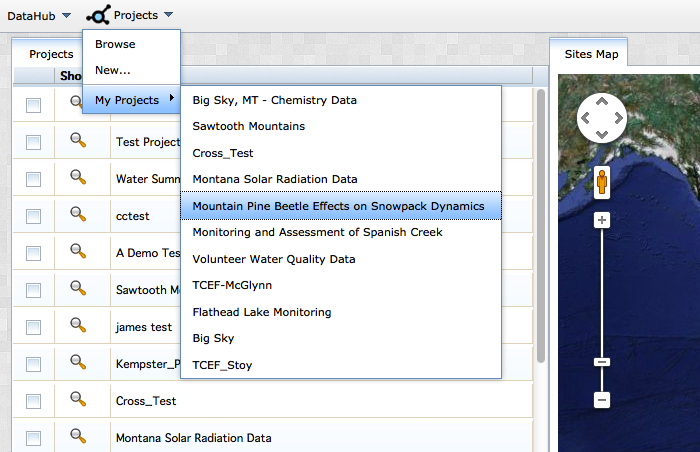
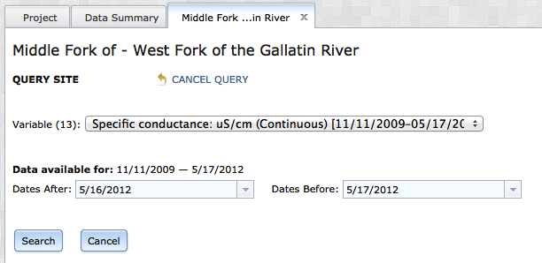
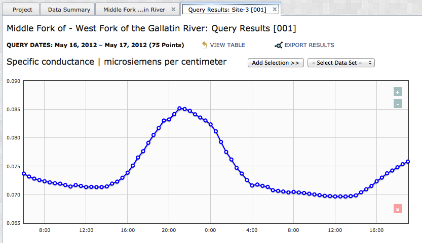
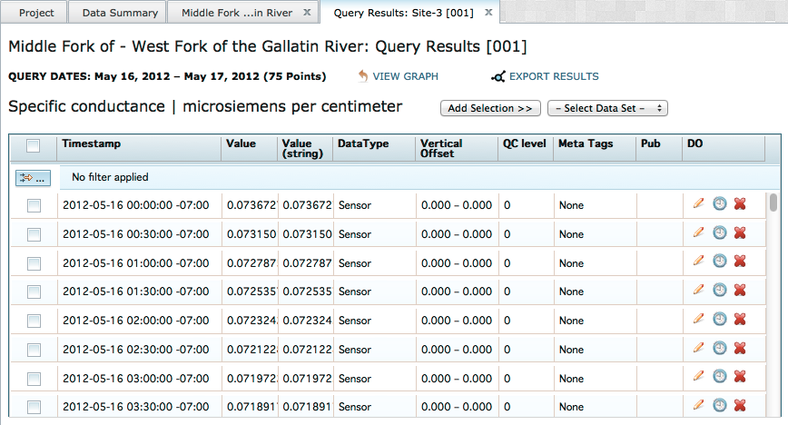
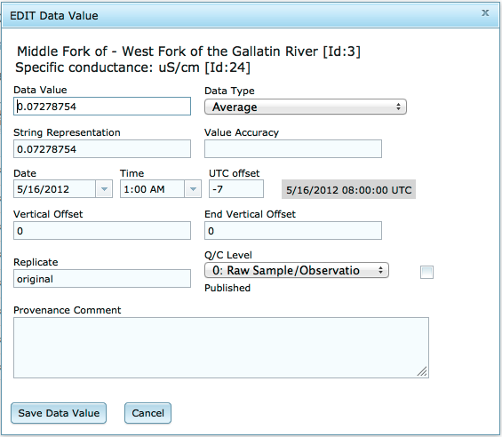
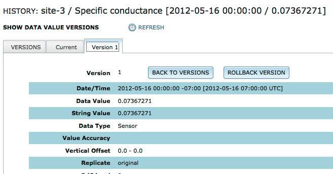

Data must undergo quality assurance and quality control procedures before users can use it confidently for analysis or site characterization. Many data archiving systems require users to complete QAQC procedures prior to data upload. This separate step forces users to utilize separate pieces of software for data editing and storage. VOEIS provides a more parsimonious solution. VOEIS users with the appropriate permissions are able to query data and edit individual values along with their associated metadata. VOEIS also provides batch-edit capabilities for users comfortable with scripting in R.
Manual QAQC
To begin you must qeury seme data using the Simple Data Search workflow. Navigate to the Project_Show page of the project you are interested. Remember, you will only be able to query and QAQC data from projects where you have the appropriate access permissions. Open the Project_Show page by selecting the project name from the Projects dropdown menu.

In the Project_Show page with the Data_Summary tab open, select the site you are interested in. The (Site_Name) tab will open. Select the option: "DATA QUERY QA/QC" from the options at the top of the page.

You will be directed to a new tab where you will define your query. You need to select a variable from the dropdown list, and a date range you are interested in.

When you are finished, click "Search". A new tab will open with your query results. You can toggle back and forth between the graph view and a table view of the data. If you would like to export this data for analysis, simply click the "Export Results" option from the top of the tab and select a directory to save the .csv file to. This file will contain all of the data values returned by your query, as well as the complete set of metadata that is stored with them.

The interactive graphing widget allows you to select individual data value, which are then highlighted in the table view of the data. The (+/-) buttons on the top right of the graph allow users to modify the zoom/extent of the graph. Click the "View Table" option from the top of the tab. You will now see a data grid containing all of the data values that were returned by your query. Take notice of the icons located in each row in the column labeled "DO". These icons will allow you to edit individual data values, view provenance information, or delete values.

To edit a data value, click on the pencil icon in the corresponding row. You will see a dialog box containing all of the information associated with the data value that can be edited in this workflow. Make the changes required and click the "Save Data Value" button to close the dialog box.

Your data value is now updated. To observe your changes, click on the clock icon in the row that contains the data value. A new tab will open, displaying the provenance information associated with the data value. Click on the various tabs to review all of the versions. You can roll the data value back to any of the previous versions at any time by selecting the "Rollback Version" button in the version tab that contains the correct data value information.

If the data set contains erroneous values, you can delete them by clicking on the red "X" in the corresponding row in the data grid. This change cannot be undone, so use it cautiously.
Batch QAQC
[This functionality is not yet available]
Created with the Personal Edition of HelpNDoc: Easily create Help documents